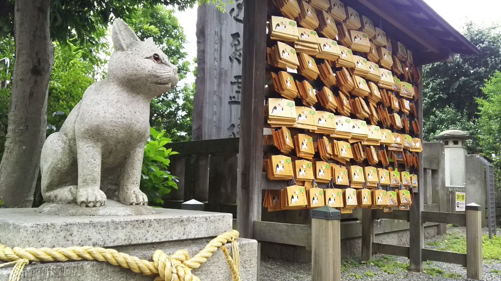
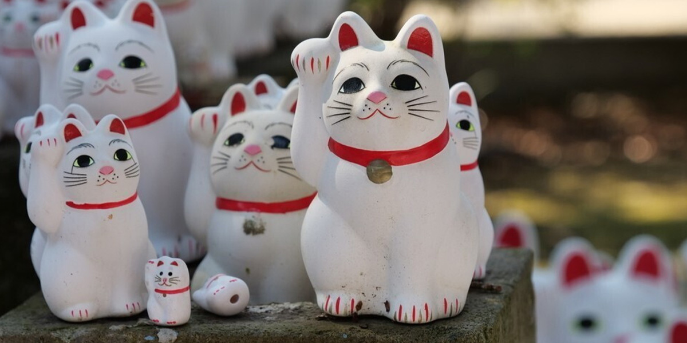
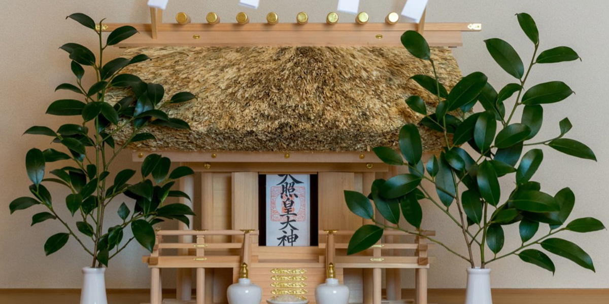
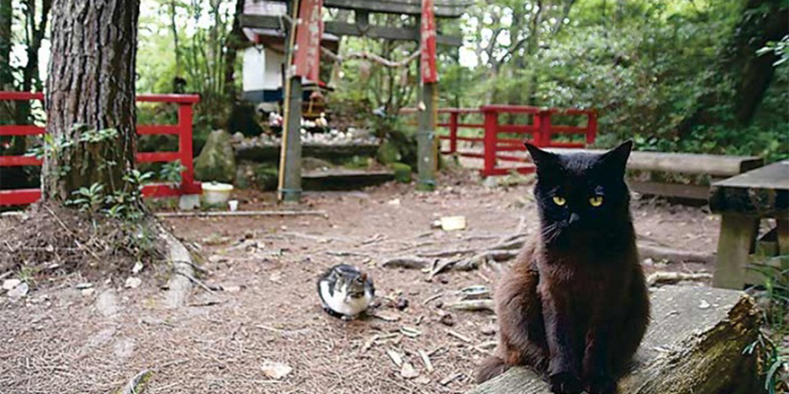

塚本神社について

御祭神について
塚本之御魂神（つかもとのみたま）
[別称］倉稲魂命
事業成就、学業成績、厄除、安産祈願、金運上昇、五穀豊穣の神

塚本神について
この地に元々存在した安産と五穀豊穣の神・塚本主尊(つかもとぬしのみこと)とオネコサマ信仰が結び付き
塚本之御魂神としてこの地で信仰されている神様です。

由緒・歴史
平成中期、東京に出稼ぎに出ていたとあるプログラマーがおりました。
しかし大不況のあおりを受け、平成16年にあえなくリストラを勧告されてしまいます。
失意の中、地元に帰郷したプログラマーは就職活動に精を出しておりました。
書類応募と面接の繰り返しで毎日疲弊していた彼は、ある日大きな猫を拾います。
お腹を空かせていた猫にごはんを与え、就寝に就いたその夜、彼の夢に拾った猫が出てきてこう告げました。
「年末ジャンボ宝くじを買いなさい。」
変な夢だったな…と思いつつ、話のネタにでもなるかもしれないと、プログラマーは半信半疑で宝くじを買いました。
するとなんということでしょう。猫の恩返しとでも言わんばかりに、宝くじの一等に当選したではありませんか。
この猫の恩返しは風の噂で瞬く間に広がり、その話を聞きつけた人たちが、
プログラマーの拾った猫を「ネコサマ」と崇め金運上昇を願って信仰しました。
そうして「オネコサマ」のご利益に肖り富を得た人々の寄付により、「オネコサマ」を崇める神社が建立されました。
その際、土着神・塚本主尊のご利益も見込んで御祭神として塚本之御神を創造し今日に至ります。
お参りいただきます皆様に、良いことがありますようにご祈願いたします。